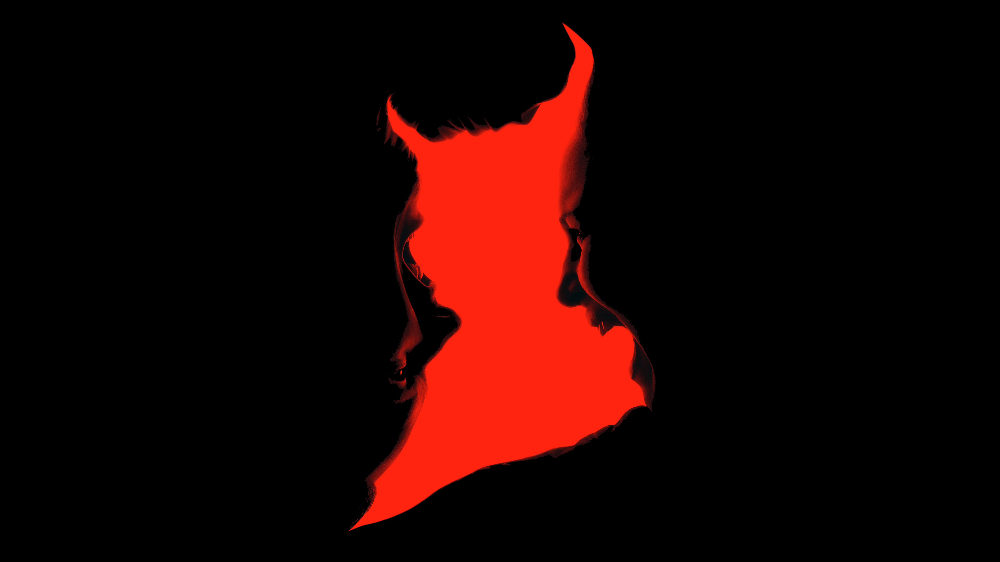
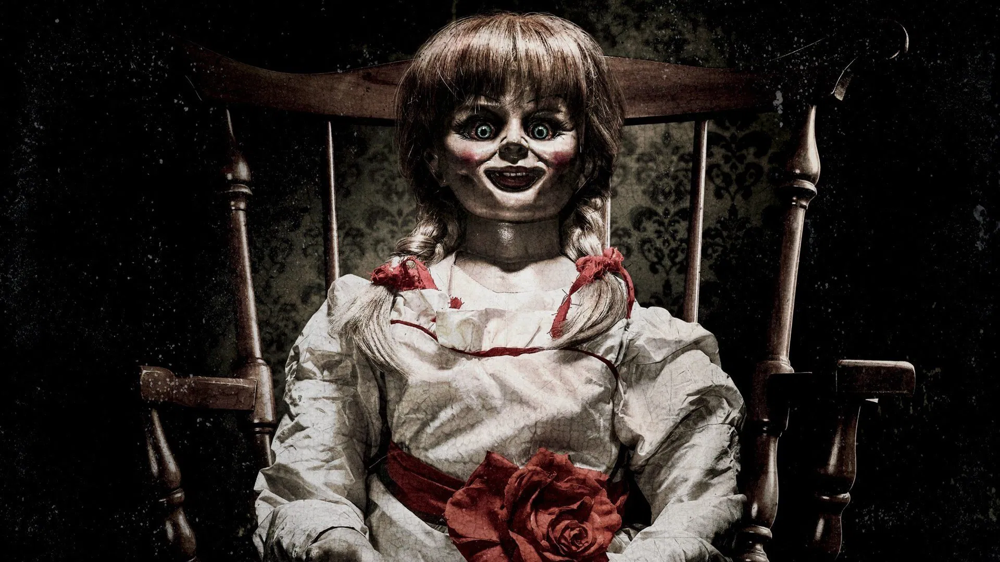
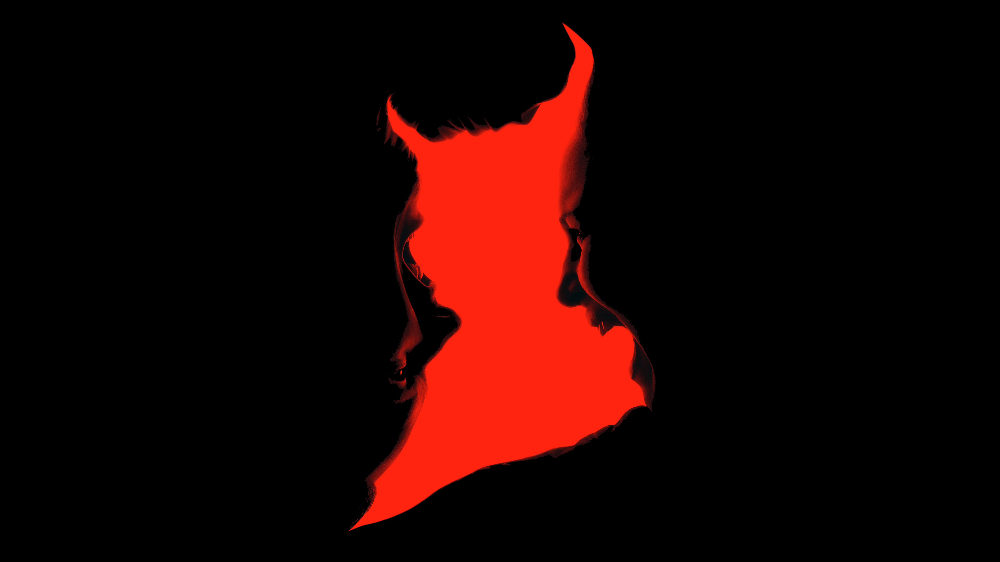
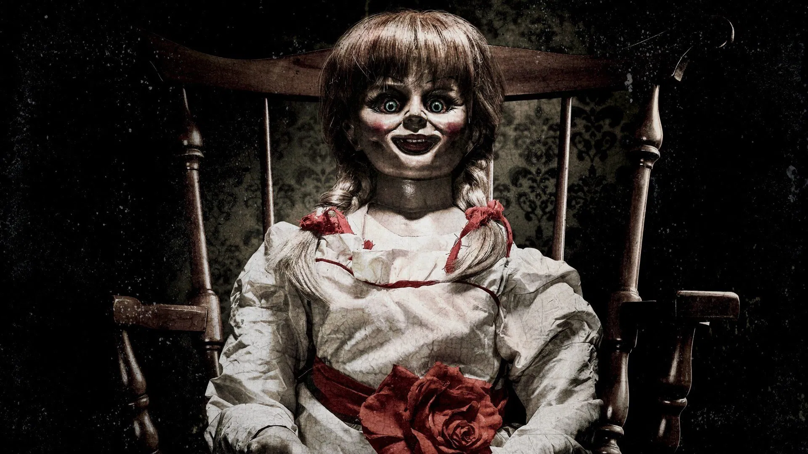

Ed e Lorraine Warren foram renomados investigadores paranormais cujos casos inspiraram o universo cinematográfico de "Invocação do Mal". A franquia não se limita aos filmes principais; ela expandiu para histórias de entidades e objetos que eles investigaram, criando um universo compartilhado.
O primeiro filme da saga apresenta o caso da família Perron, que se muda para uma casa de fazenda em Rhode Island e é aterrorizada por uma entidade. Os Warren são chamados para ajudar a família a enfrentar a entidade maligna que está ligada à história sombria da casa..
O segundo filme leva os Warren para a Inglaterra, onde investigam o famoso caso do poltergeist de Enfield, uma das investigações paranormais mais documentadas da história. A família Hodgson, que vive em uma casa assombrada, é o foco da investigação, que se revela como um dos casos mais aterrorizantes de suas carreiras.
O terceiro filme da franquia principal explora o primeiro caso na história dos Estados Unidos em que um suspeito de homicídio alega possessão demoníaca como sua defesa. Baseado no julgamento de Arne Cheyenne Johnson, o filme mostra os Warren lutando para provar que uma possessão maligna é a verdadeira responsável pelo crime.
Lançado em setembro de 2025, o quarto filme da franquia principal, intitulado "O Último Ritual", é dirigido por Michael Chaves e promete ser o desfecho da saga de Ed e Lorraine Warren. O longa se passa em 1986, cinco anos após o último caso, com o casal investigando um novo mistério. O filme marca a despedida dos atores Patrick Wilson e Vera Farmiga em seus papéis icônicos, mas a franquia de terror pode continuar com o desenvolvimento de uma série pela HBO.
A boneca Annabelle, vista em muitos dos filmes da franquia, é um objeto real que os Warren mantinham trancado em seu museu. A boneca original é uma boneca de pano, não a boneca assustadora do cinema, e está protegida por rituais para impedir que sua força maligna se espalhe.